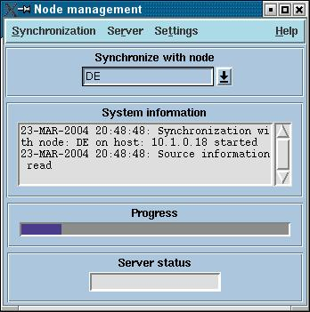
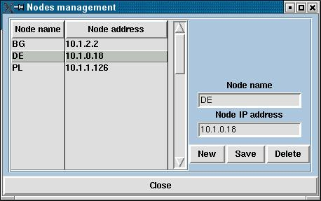
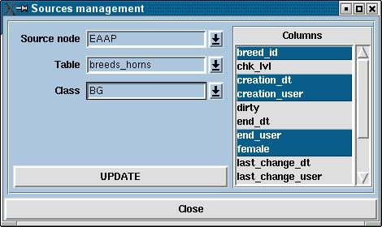
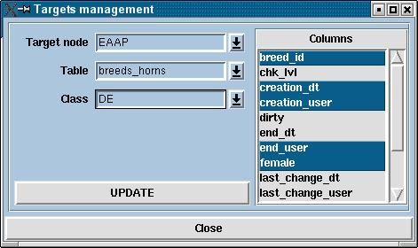

Интерфейс за мениджмънт на възела
- Въведение
- Как да стартираме синхронизацията
- Мениджмънт на възлите
- Мениджмънт на източниците
- Мениджмънт на получателите
- Мениджмънт на сървъра
- Допълнителна помощ
Системата за управление на възела е създадена за интерфейс с потребителите на синхронизация в АПИИС базирана мрежа. Такава мрежа се състои от няколко свързани АПИИС базирани бази данни. Всяка база има уникален интернет адрес и име. Тази информация се съхранява в базата в таблицата nodes. Как да управлявате тази информация ще намерите
тук. Следващата стъпка е да се определят дата елементите -
каква информация ще получавате и предавате към други възли. Това се осъществява посредством мениджмънт на таблиците sources и targets.
Обикновено тези настройки се правят само веднъж при начално установяване на системата. Допълнителни настройки при вече установена система са съшо възможни.
Синхронизационният процес е от тип клиент-сървър. На възела източник на информация има стартиран демон, който очаква връзка от друг възел.
Инициатор на такава връзка е получателят, на който възел е стартиран клиентът.
Ето защо,за да дадете достъп на другите възли до вашите данни трябва да стартирате сървър демона си. Как да стартирате/спрете сървъра си ще намерите тук.
Ако искате да получите информация от други възли трябва да стартирате собствения си клиент или просто:
start the synchronization
Стартирането на синхронизацията се управлява от главния прозорец:

Първо трябва да изберете възел от падащия списъкSynchronize
with node. След това от менюто изберете: Synchronization>Start.
Можете да следите хода на синхронизацията чрез лентата на състоянията и полето: System
information.
За да отворите прозореца за мениджмънт на възлите изберете от менюто: Settings>Nodes.
Ващият екран трябва да изглежда така:

Списъкът от лявата страна съдържа имената и IP адресите на всички възли в мрежата.
За да добавите нов възел щракнете бутона New и въведете име и
IP адрес в съответните полета. За да запишете данните щракнете бутона
Save.
За да редактирате информацията за даден възел първо го маркирайте в списъка.
Тогава името и адресът му ще се появят и в текстовите полета вдясно, където може да ги редактирате. За да запишете щракнете Save.
За да изтриете даден възел, го изберете от списъка и щракнете бутона Delete.
За да опишете каква информация очаквате от другите изберете:
Settings>Sources.

Изберете името на възела източник, таблицата и класът записи от падащите списъци.
Класификацията в ЕФАБИС и на базата на имената на страните, затова бъдете внимателни.
След като сте избрали таблицата трябва да изберете кои колони от тази таблица очаквате. За тази цел изберете една или повече колони от списъка в дясно. За за изберете повече колони натиснете и задръжте клавиша Control key и маркирайте желаните.
За запис на настройките щракнете бутона Update.
Става аналогично на мениджмънта на източниците, но трябва първо да стартирате:
Settings>Targets.

Оттук може да стартирате сървър демона и да проверите състоянието му
За да стартирате демона изберете от менюто Server>Start.
За спиране изберете Server>Stop.
За да проверите състоянието на даден сървър първо изберете възела от: Synchronize with node и щракнете от менюто Server>Ping.
Съответното съобщение ще се появи в полето Server status. Има три възможни състояния:
- FREE - сървърът работи и е свободен
- BUSY - сървърът работи, но в момента е зает с друг клиент
- Not responding - не може да бъде осъшествена връзка със този сървър
Ако имате допълнителни въпроси може да ги изпращате на адрес: duchev@tzv.fal.de
Живко Иванов Дучев
02-09-2004
English version